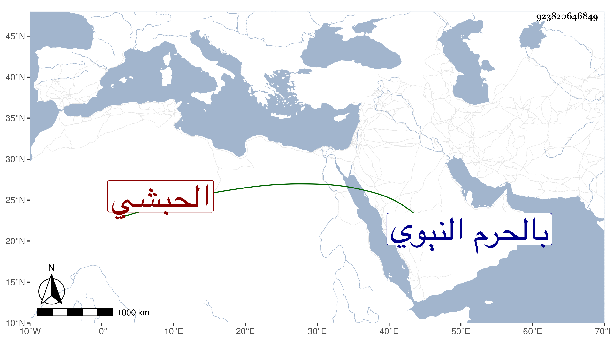

0902Sakhawi.DawLamic.ITO20230111-ara1.EIS1600.923820646849
Biography ID: 923820646849
923
سرور الطرباي الحبشي . اتصل باستاذه طرباي لخدمة السلطان فعمل جمدارا في سنة خمس وعشرين وترقى حتى ولي بعد صرف فارس الأشرفي سنة أربع وخمسين ظنا مشيخة الخدام بالحرم النبوي إلى أن مات هناك في صفر سنة ثلاث وسبعين وبها دفن بعد أن شاخ . وهو من إخوة جوهر القنقباي ويذكر بدين وخير وسيرة محمودة مع كرم . واستقر بعده مرجان المحمدي التقوي .
